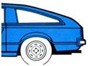
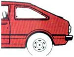
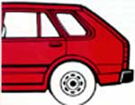
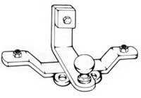
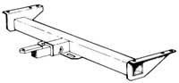
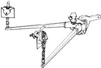

Which Hitch Is Which
The Mother Earth News editors
May/June 1988
What single addition will most increase the versatility of the family runabout? No doubt about it, a trailer hitch opens the door to more wheeled worlds than any other auto accessory. Hitch up a utility trailer, and your car will do the work of a pickup truck. You can make runs to the dump, haul boards from the lumberyard or transport a rented tiller. Hook on a travel trailer, and you can have the luxury (and economy) of a portable vacation home away from home. Haul your boat to water instead of parking it at the marina, and you'll save the substantial cost of mooring or dry storage.
Considering how much they offer and how little they cost, it's surprising there aren't chrome balls protruding from the rears of more cars. A hitch capable of towing a 2,000-pound trailer, for example, should cost about $75 installed. There are, however, a number of different hitch types with various capacities. So, to avoid buying too much or too little hitch, you should be aware of your own needs and the products available.
To choose the right hitch, you need to know three things: the towing capacity of your vehicle, the total (gross) weight of your trailer and its contents, and the tongue weight (the downward load exerted on the hitch). The towing capacity of your car is listed in its owner's manual, and there's no sense buying a hitch with more capability than the vehicle can handle. Likewise, total weight is a pretty straightforward concept. (Just be sure to include all the extra trappings you're likely to take along.) Tongue weight, on the other hand, is a bit more complex to determine, because it can be affected by how you load the trailer. It would be easy to load a utility trailer heavily in front of its axle, for example, and end up with a safe gross weight but too much tongue weight.
What happens when rated tongue weight is exceeded? At worst, the hitch might break or bend downward with the bumper. At best, the car's attitude and weight distribution (and therefore handling) will be adversely affected.
Refer to the illustrations for a breakdown of hitch capacities. Of course, manufacturers don't offer products in all three classes for every car model. There's no reason, for example, to make a 5,000-pound Class III hitch for a car that's only rated to tug 2,000 pounds. The suppliers may also have encountered problems in adapting some hitch configurations to certain models.
Manufacturers may also rate a hitch below its full class-determined weight, often because the car it's designed for is not rated to tow the class maximum weight. What's more, you may find that some hitches within a class-particularly those in Class I-have lower tongue-weight ratings. Most often this is because of inherent limitations (such as weak bumpers) in a particular car. It's worth checking several manufacturers, though. You may find that some have been able to deal with such difficulties and offer higher-rated hitches for your vehicle.
ILLUSTRATIONS BY DON OSBY
Class I and II hitches typically bolt to the car's frame and bumper. Pulling weight is handled mainly by the frame-attached bolts, while the tongue weight is transmitted to the bumper. Class I hitches are universally made from heavy strap steel bent to conform to your car's configuration. They're widely known as custom hitches, because they're bent at the factory to suit various models. Class II hitches may be of either strap steel with extended frame mounting points (with tongue weight still on the bumper) or of box tubing with frame-attachment brackets (with tongue weight transmitted to the frame). The latter type generally has a receiver that accepts a removable utility bar, to which the ball is attached. Beyond their great capacity, the beauty of receiver hitches is that the utility bar and ball can be removed when the hitch isn't needed. This prevents the practically inevitable barked shins you get with a protruding fixed bar and ball. Not surprisingly, receiver hitches are more expensive than the steel strap variety. Expect to pay somewhere around $150.
A Class III hitch carrying its rated tongue weight would drastically lighten the load on a tow vehicle's front wheels, thereby producing dangerous handling. Overload springs or air shocks wouldn't really solve the problem, since they don't redistribute the load. These items only stiffen the spring action to increase rear ride height. (Air shocks may, however, be useful with Class I or II hitches, where the tongue weight is low enough so that it isn't severely affecting tow-vehicle handling.) High tongue weight calls for a weight-distributing hitch, which consists of a pair of spring bars that pivot near the ball and are suspended by chains from the trailer frame. Acting as levers, the bars transfer the tongue load into the chassis of the trailer and the tow vehicle. By shortening or lengthening the chains, the ride height of the ball can be adjusted, which in turn alters the loading of the tow vehicle's front and rear wheels. Weight-distributing hitches come in different capacities and are used exclusively with receiver hitches.
Most cars being built today can take a Class I hitch and tow a trailer of 1,000 to 2,000 pounds without much difficulty. (Of course, the driver should allow for longer braking distances, slower acceleration and restricted maneuverability.) Heavier trailers, however, can create problems that the standard vehicle, despite having adequate power, just wasn't designed to handle. An automatic transmission, for example, may overheat if not equipped with an auxiliary cooler. Furthermore, sway, where the weight of the swinging trailer twists the car chassis on its axle, can also be a problem in winds or on rough roads. Heavier springs and shocks help, but it may be necessary to add sway control-friction, hydraulic or cam-operated devices that damp sideways swing at the ball. Trailer brakes are also often used in heavier towing situations. One type-surge brakes-is actuated at the coupler and is thus a part of the hitch assembly. Your hitch dealer should be happy to fill you in on the details.
Once you're hitched, take it easy while you get the hang of swinging wide for turns and slowing well in advance. Sooner or later, though, you'll have to back up. No amount of reading and imagining will fully prepare you for your first attempt at backing a trailer. It's one of those things you've got to practice to get right. But, if it's any solace, here's a tidbit you might not know: A short utility trailer is much more difficult to back without jackknifing than a 60-foot tractor trailer.
|
 You say you've just bought a new boat but the nearest lake is six long miles away? |
 And you think ""tongue weight"" might refer to the newest exercise fad? |
 Don't fret! MOTHER'S staff is here to help; 'cause when you gotta tow, you gotta tow! |
|
 CLASS I HITCH This light-duty, bolt-on hitch can handle 2,000 pounds of pull weight and 100 to 200 pounds of tongue weight. |
 RECEIVER HITCH Suitable for Class II or III duty, this hitch bolts to the vehicle's frame and can handle 5,000 pounds of pull weight. |
 LOAD-EQUALIZING HITCH This attachment for a receiver hitch distributes the load evenly between the trailer and the tow vehicle to maintain even axle loadings with heavy tow and tongue weights. |
|
 |
|
|